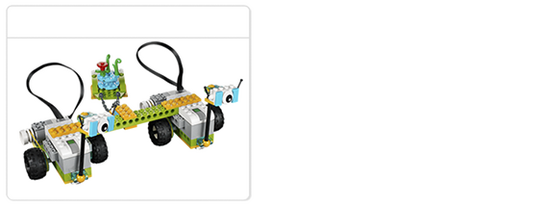

Overzicht van het project
In dit deel van het project maken de leerlingen kennis met de kantelsensor, die ze gaan gebruiken om Milo te helpen een bericht naar Max en Mia te verzenden.
Type project
Dit Aan de slag-project laat jou en je leerlingen kennismaken met nog meer belangrijke elementen van de WeDo 2.0-projecten, waaronder:
-
Manieren ontdekken om de kantelsensor te gebruiken
-
De opnametool gebruiken om een schermregistratie van een programma te maken
Tijdsduur
Circa 20 minuten
Volgende stappen
Bekijk deel D van het project Milo, de wetenschapsrover.
